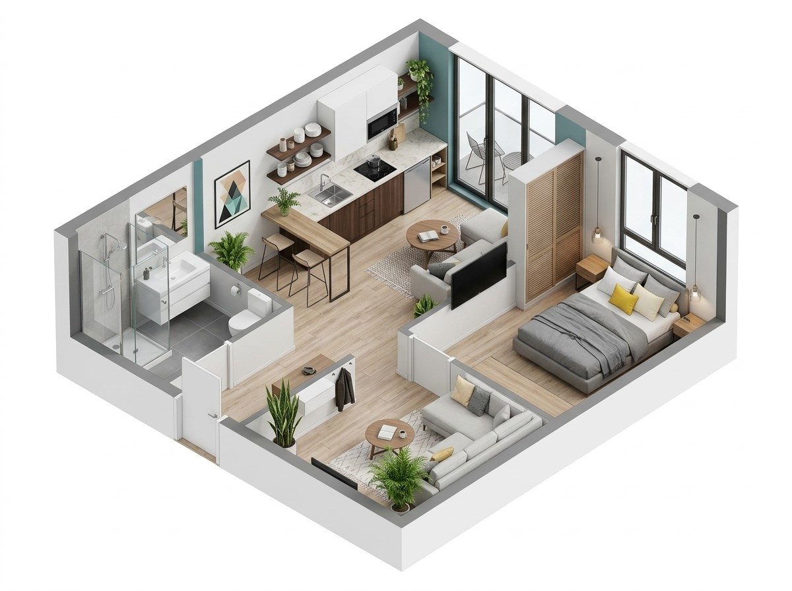
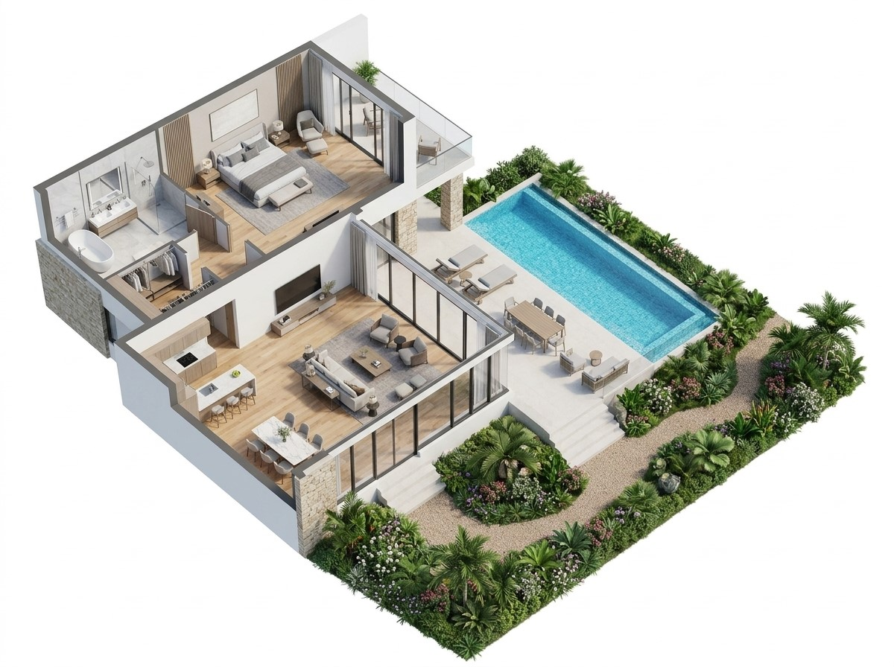

معايير وحدة الضيافة الخاصة
اختر نوع الوحدة (شقة أو فلة) للاطلاع على المعايير الخاصة بها
🏢 قسم الشقة
🏡 قسم الفلة

🛏️
غرفة النوم
🚿
دورة المياه
🍳
المطبخ والتحضير
🛋️
غرفة المعيشة
🚨 اشتراطات السلامة
📋 المعايير العامة والخدمات
🏊♂️ اشتراطات المسابح (إن وجدت)

🚿
دورة المياه
🛏️
غرفة النوم
🛋️
غرفة المعيشة
🍳
المطبخ
🏊♂️
المسبح والإنقاذ
🏡
الحديقة والجلسات
🚨 اشتراطات السلامة
📋 المعايير العامة والخدمات
تم الاطلاع وإغلاق